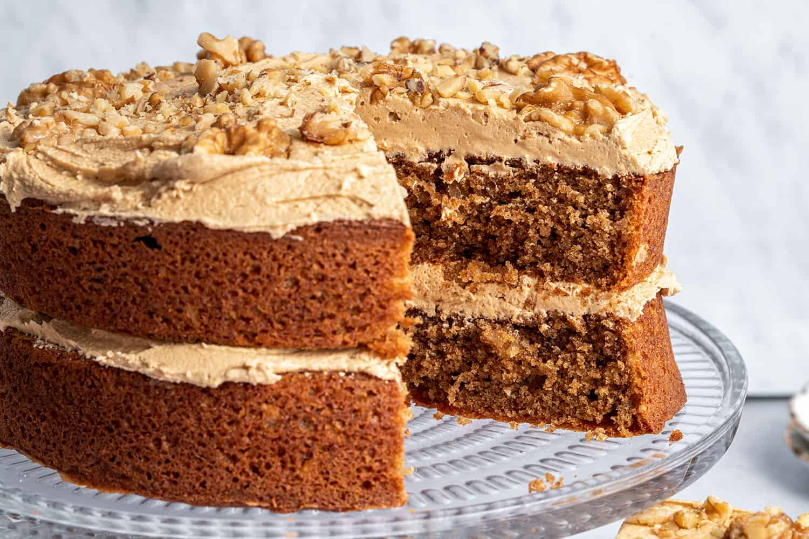

!DOCTYPE html>
Coffee and Walnut Cake
Custom California-Style Sushi Rolls
Home

Ingredients
- Butter
- Caster sugar
- Eggs
- Self-raising flour
- Baking powder
- Walnuts
- Strong black coffee
- Icing sugar
- Walnut halves (optional)
Instructions
- Preheat oven to 180°C (350°F) and grease and line two 20cm (8-inch) round cake tins.
- Cream together the butter and sugar until light and fluffy.
- Beat in the eggs one at a time.
- Fold in the flour and baking powder.
- Stir in the chopped walnuts and coffee.
- Divide the mixture between the two cake tins and bake for 20-25 minutes.
- Cool the cakes on a wire rack.
- For the buttercream, beat the butter and gradually add the icing sugar and coffee until smooth.
- Sandwich the cakes together with half of the buttercream and spread the remaining on top.
- Decorate with walnut halves if desired.
More details
- Serves: 1 to 10
- Course: Dessert
- Suitable for vegetarians